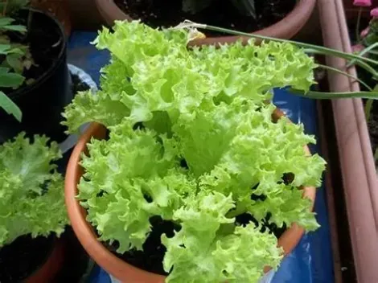
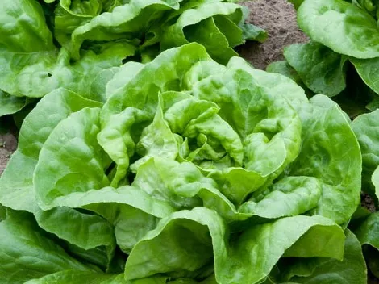
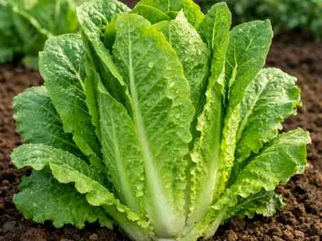
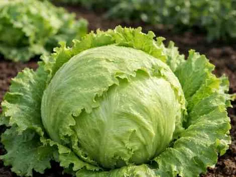

Alface (Lactuca sativa)
A alface, cujo nome científico é Lactuca sativa, é uma hortaliça herbácea muito cultivada e consumida no mundo todo, especialmente crua em saladas. Ela pertence à família Asteraceae, tem caule curto, folhas que podem ser lisas ou crespas, verdes, arroxeadas ou amareladas, e seu ciclo costuma ser anual, com flores amarelas na fase reprodutiva.
Descrição
A alface é uma planta de porte baixo, geralmente entre 15 e 30 centímetros, com folhas dispostas em roseta ao redor de um caule curto. Conforme a variedade, pode formar uma “cabeça” mais compacta ou crescer com folhas soltas, e isso explica a grande diversidade de tipos encontrados no cultivo.
Principais Características:
- Nome científico: Lactuca sativa.
- Família botânica: Asteraceae.
- Hábito de crescimento: herbácea anual.
- Folhas: lisas, crespas ou frisadas, em tons de verde, roxo ou arroxeado.
- Flor: pequena, amarela, reunida em inflorescências.
- Fruto: seco, do tipo aquênio.

Variedades Recomendadas (Embrapa)
| Cultivar | Tipo de Folha | Destaque Técnico | Ciclo (dias) |
|---|---|---|---|
| BRS Leila | Crespa (Verde-oliva) | Tolerante ao pendoamento; adaptada a campo, cultivo protegido e hidroponia; resistência a nematoides-das-galhas e ao vírus do mosaico da alface. | 35 - 45 |
| BRS Mediterrânea | Crespa (Verde-escuro) | Tolerante ao calor e ao pendoamento; resistência ao Fusarium e nematoides-das-galhas; adaptada a campo, cultivo protegido e hidroponia. | 35 - 45 |




Manejo e Plantio
- Produção de mudas: Recomenda-se o uso de sementeiras ou bandejas para melhor controle sanitário e seleção das mudas mais vigorosas.
- Transplante: Deve ser realizado quando as mudas apresentarem entre 4 e 6 folhas definitivas, geralmente entre 15 e 20 dias após a semeadura.
- Horário de plantio: O transplante deve ser feito nas horas mais frescas do dia, preferencialmente no início da manhã ou final da tarde.
- Irrigação: Após o transplante, realizar irrigações diárias nas primeiras semanas. Posteriormente, irrigar a cada 2 a 3 dias, mantendo a umidade do solo constante.
- Solo: Deve ser livre de contaminação química e biológica, com análise prévia para correção de pH e adequação nutricional antes do plantio.
- Adubação: Preferencialmente utilizar adubos orgânicos compostados. A incorporação deve ser realizada antes do plantio para reduzir riscos de contaminação microbiológica.
- Manejo fitossanitário: Recomenda-se o monitoramento constante da lavoura e adoção do manejo integrado de pragas e doenças para reduzir o uso de defensivos agrícolas.
- Rotação de culturas: Prática recomendada para melhorar a fertilidade do solo e reduzir incidência de pragas, doenças e plantas daninhas.
Manejo Integrado de Pragas e Doenças (MIP)
| Problema | Sintomas | Manejo Recomendado |
|---|---|---|
| Mosaico da Alface (LMV) | Mosaico foliar, manchas cloróticas, deformação das folhas e redução do crescimento. | Uso de sementes certificadas, mudas sadias e controle de insetos vetores (principalmente pulgões). |
| Míldio (Bremia lactucae) | Manchas amarelo-pálidas nas folhas que evoluem para necrose, com massa branca na face inferior. | Evitar alta umidade, melhorar ventilação da lavoura, utilizar cultivares resistentes e manejo adequado da irrigação. |
| Podridões radiculares (ex.: Pythium) | Murcha, escurecimento das raízes e desenvolvimento reduzido das plantas. | Plantio em solos bem drenados, controle da irrigação e uso de mudas sadias. |
| Tripes (vetores de viroses) | Prateamento das folhas, manchas e transmissão de vírus como Tospovirus. | Monitoramento da lavoura, controle de plantas hospedeiras, uso de armadilhas e manejo do vetor. |